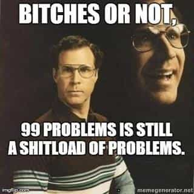
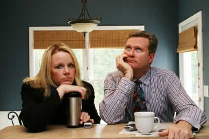

< < < Back
Don’t Be Ashamed For Being A Bachelor – Return Of Kings
Have you ever wondered why self-imposed, eternal bachelorhood manages to evoke so many negative emotions in people? Sure it’s easy to quietly mock or pity those who ended up that way without a choice, but it’s the men who do so by choice that often attract the most scorn. As fertility rates continue to plummet, from who men continue to put off marriage more and more and we see the growing chorus of media shaming tactics trying to scold men into being the men their fathers were, the dwindling marriage rate is gradually becoming a major social, economic and political issue. We are starting to enter its beginning stages, and you can rest easy knowing that pressure will continue to mount.
What’s worse is the personal derision you often face from family, friends, your social circles and even in professional circles. No matter how logical your views may be or how justified your position is given the lifestyle you have chosen and wish to pursue based on your own individual and personal choices, the fact that a good man has willingly taken himself off the market seems to irritate everyone.

You face constant shaming, accusations of ignorance, accusations of selfishness and immaturity or the endless charade of never-asked-for-advice to help you conform. Jokes about being abnormal are also common, despite the fact that bachelorhood is gradually becoming the new normal, either by choice or through divorce anyway. It’s also not something we just see from women either, men very often are the biggest perpetrators despite the fact that women have the most to gain in modern marriage.
I have often wondered why it annoys people so much, and while there are many reasons for it and it varies from person to person, there is one common theme that seems to ring true for all of them:
People are terrified by the fact that they may be doing the wrong thing.
When you have invested so much into the socially expected life path that would be considered safe and desirable, anything that contradicts that life path is going to question the validity of their life choices. It stings them even more when the person rejecting that lifestyle is showing signs of significant success or happiness. The lovable loser attracts their pity, but the successful bachelor attracts their envy even when if there is no need to be envious. The former validates their life decisions, the latter questions it and forces them to evaluate their decisions a little more closely, which is incredibly uncomfortable for many people. Those who are most doubtful of the decisions they have made very often tend to be the most scornful. Likewise, those who take a great deal of social validation from their conformity also tend to be vocal in their criticism.
Why Cant You Just Fit In?
For a man, you are meant to go to school, go to college, get a job, get married as you start to find your feet, have 2.2 kids, save for their education and your retirement as you work your way up the corporate ladder. Your respite is the occasional holiday you enjoy when you are on annual leave or when you take the odd international trip if you are lucky. This is the life path you have been sold to us and it’s deeply embedded in our culture. It’s the outcome of every happy ending at the end of almost every romantic comedy you will ever see. It’s the sitcoms you watch and lifestyle you are taught to chase from a very young age. This is what you are being told to do with every article you read that implores you to man up and marry, and it’s what you are being told in every conversation you have where people ask you when you are going to settle down.
Now it’s not a bad life path by any stretch, the problem is that it’s not a life path men derive much benefit from anymore. It used to be a good, stable life for most men and one that brought a sense of comfort to many if not most. It’s why so many fathers and grandfathers wished the same things for their sons. Life has changed though, the world has changed, and the path you are expected to take is now one that is looking to kick your ass endlessly along the way if you are a man.
Consider how:
- School is now a hostile place for boys
- College is now a liberally biased indoctrination camp that will saddle you with immense debt
- Jobs are tougher to come by, but most also no longer pay enough to support a family on a single income if you land one
- Divorce rates are over 50% and marriage is a huge risk for men financially and emotionally
- Men get smashed in family courts making children a huge risk financially and emotionally
- Splintered families mean retirement is unlikely and child rearing costs you bear are higher
- You need to change jobs to win major promotions these days, internal promotions are far more rare.
- Two weeks vacation, yet we are working longer, harder and for less pay than we have in decades
Despite this, the natural desire to have a traditional family is so strong and the cultural influence so great that many men still gravitate towards it without question. The expectation and social pressure is so immense that men attach a great deal of value in calling themselves married, family men. If anything disproves the notion that most men are afraid of commitment to the right women, it’s the fact that despite the entire system basically raping them cradle to grave still does not scare them away completely. Which is why so many men continue to marry and follow the expectations that society has for them, despite the statistical facts proving that they are on a hiding to nothing.
The doubt sets in soon though. Many end up feeling trapped in a life that they no longer feel is their own, which often will lead to them resenting those who took a different path or intend not to follow the same life path they may have. Things don’t turn out the way the poor bastards expected them too, mostly because they have been sold an illusion. Likewise their wives and future wives, who often seen your lifestyle as a threat to their relationships with their husbands too. The last thing they need is hubby getting any bright ideas and jetting off to some foreign country so he can go fishing or golfing with his single friends. Have you ever noticed how men in serious relationships or those who are married gradually start cutting out their non married friends? In most cases, this is a result of the women in their lives heaving the pressure on their husbands and boyfriends to cut ties with their friends who don’t conform to their views on relationships.
Women also despise the fact that you are not settling, and if you have anything to offer at all then many feel you should be on the market white knighting your life away the same way their men have. The more successful you are, the more they will apply indirect pressure or resort to shaming tactics in an effort to correct your behavior. It does not even matter if they are unhappy themselves, you can rest assured that they will see marriage as an ideal and seek the validation your agreement bestows.

The Silver Lining
For the younger guys reading this, your life gets better as you get older. Women have it ridiculously easy until their late 20’s, after which it is downhill quickly. Their careers fizzle out, and between the ages of 30-35, the number of women who vacate the workforce becomes a landslide. They are simply not cut out for it and leave to “have families” when not in organisations that coddle them along.
Career wise, doors begin to explode open as women move on. Your dating options increase and if you have your shit together, women in their 30’s are throwing themselves at you while the younger women are all still on the table. You also have far more reason to maintain your health and fitness, and while your friend are starting to become as fat as their wives, the free time you have allows you to maintain your exercise regimes.
You can travel more frequently and experience foreign countries as a single man too. Count your lucky stars that you are not one of those married men with fat wife in tow while you are in places like Thailand or Brazil. You too can laugh over your beer as they walk past with drool hanging from their chins while their wives scowl at everything under the sun. You can spend more time enjoying your hobbies. Nothing drives the second hand motorbike market like marriage. You can clock up the notches as you figure out what you really like in a woman rather than settling for the first hot piece of ass that gives it up. You can take more risks professionally as you only stand the chance of taking yourself into poverty, not your entire family. You can build far more wealth as you save a small fortune by avoiding the spending habits of a costly wife.
Of course, you could always do the right thing and man up…
Read Next: 10 Best and Worst Countries for an American Man to Find a Wife